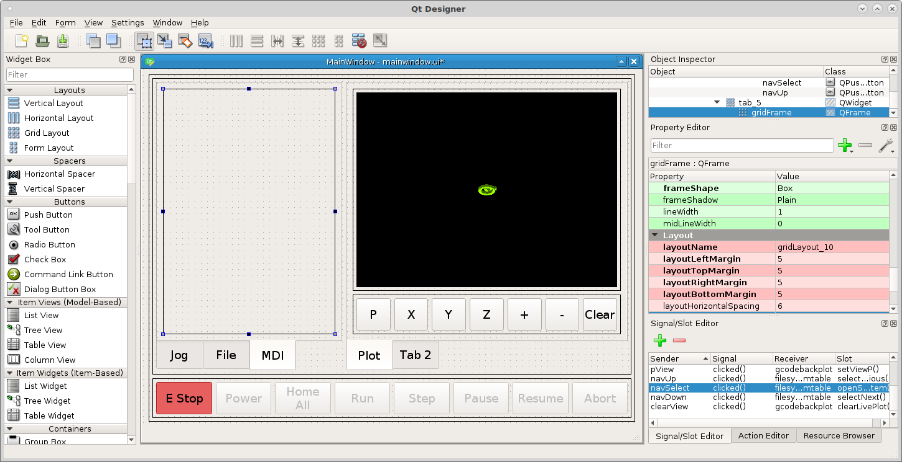
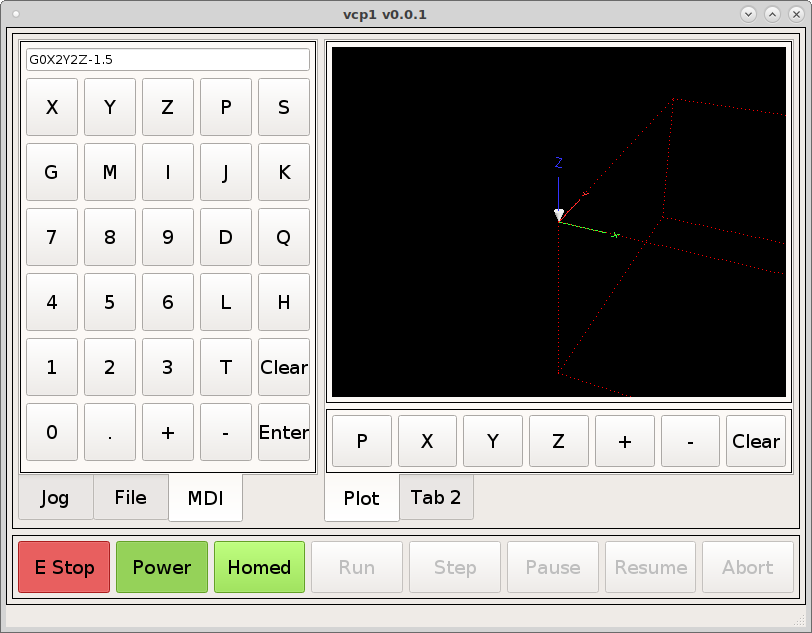

MDI
Manual Data Input
Start by adding a tab to the left tab widget. Right click on the File tab and select Insert Page then After Current Page and name that tab MDI. Drag a grid into the tab and change the tab layout to grid and morph the grid into a QFrame as before.
{kind=link}
Add a MDIEntry to the frame and and change the objectName to mdiEntry
and change the font to 12 from the Property Editor. Now add some
Push Buttons below that. Add 6 rows of buttons with 5 buttons in each row.
Press the Ctrl key and click on each button to select them all. Right click on
any button and select Assign to button group and click on New Button Group.
{kind=link}
In the Object Inspector scroll down to the bottom and find the buttonGroup
object we just created and change the objectName to mdiButtonGroup. Now we
have a group of buttons that all belong to the same group. Now lets change the
text of the buttons like the following and change the objectName for the Enter
button to mdiEnterButton and the objectName for the Clear button to
mdiClearButton. Right click on the Clear and Enter buttons and select
Assign to button group None to remove them from the group.
{kind=link}
Now lets work some magic, open up ~/vcp1/vcp1/mainwindow.py and add the following Python code after # add any custom methods here and pay attention to the indentation level. The example uses 4 spaces per level. Don’t forget to add the line after super(MyMainWindow, self).__init__(*args, **kwargs)
from qtpyvcp.widgets.form_widgets.main_window import VCPMainWindow
# Setup logging
from qtpyvcp.utilities import logger
LOG = logger.getLogger('qtpyvcp.' + __name__)
class MyMainWindow(VCPMainWindow):
"""Main window class for the VCP."""
def __init__(self, *args, **kwargs):
super(MyMainWindow, self).__init__(*args, **kwargs)
self.mdiButtonGroup.buttonClicked.connect(self.mdiHandleKeys)
# add any custom methods here
def mdiHandleKeys(self, button):
char = str(button.text())
text = self.mdiEntry.text() or '0'
if text != '0':
text += char
else:
text = char
self.mdiEntry.setText(text)
What we are doing in the Python code is connecting all the buttons in the mdiButtonGroup to the function mdiHandleKeys. When a button is clicked it is passed to the function as button. So we take the button.text() and make sure it’s a string then assign it to the char variable. Next if the mdiEntry has any text in it we assign that to the text variable, if not then we assign it the character 0. Next we either append char to text or assign char to text. Last we set the new text to the mdiEntry.
The reason the Enter and Clear buttons are not part of the group is we will connect those two buttons clicked signal to the mdiEntry. These are the signals for the clear and enter buttons.
sender action receiver slot
mdiEnterButton clicked() mdiEnter submit()
mdiClearButton clicked() mdiEnter clear()
Now when we run the VCP we can enter and execute MDI commands from the touch screen
{kind=link}